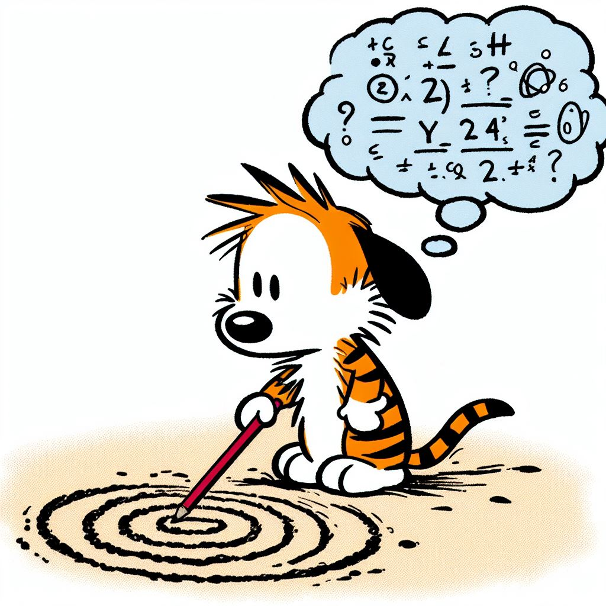
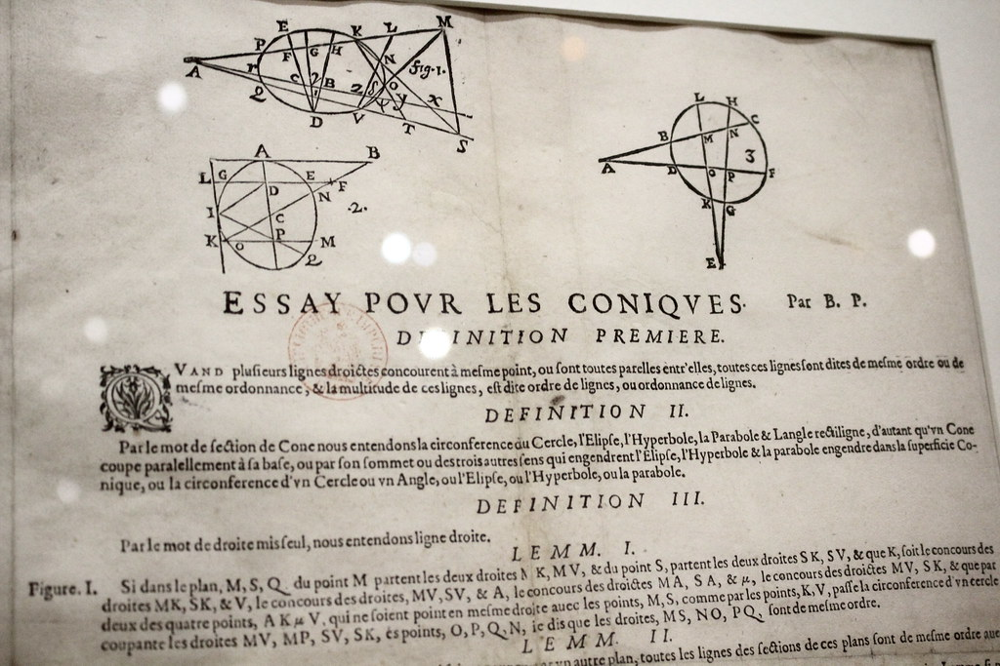
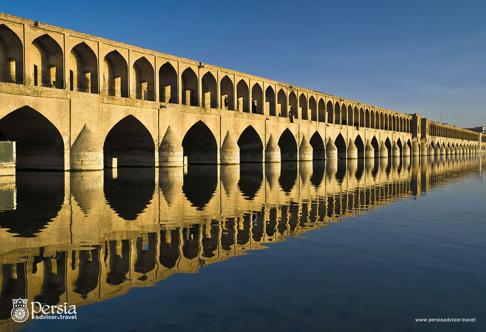

|
When: July 15-19, 2024, 9am-5pm Where: Boyd Research and Education Center (200 D.W. Brooks Drive) Registration: Fill this Google form Registration fee: $20 (includes a t-shirt) |
 |
About Topics Schedule Prior MathCamps
Higher Math for high school students.
At MathCamp, UGA faculty co-ordinators each work with a graduate student mentor and undergraduate helper guiding a group of roughly 5 high school students on exploratory projects in a range of topics. We plan to have 5 groups, for a total of 25 students. Registration will be on a first come first served basis.
Activities are aimed at high school students entering grades 9-12. However some younger students have also done quite well with the material in the past. With this in mind, there are no formal grade level requirements. The most important prerequisite is an interest in learning new things and curiosity about mathematics!
Snacks and Lunch: Snacks will be provides. Participants have the option of either bringing their own packed lunch (there is a refrigerator available), or have lunch at Bolton Dining Commons, for the price of $12.20.
Organizers: The UGA MathCamp is administered by Akram Alishahi and Jimmy Dillies. If you have any questions, you can reach out to us at:
akram.alishahi@uga.edu
Jimmy.Dillies@uga.edu
How: MathCamp is funded by NSF CAREER grant DMS-2238103.
Project 1: Designing a knot-unknot game (Faculty co-ordinator: David Gay, Graduate student mentor: Isnayni Hadi)
Description: This group will work together to design a game in which one player (or team) is trying to unknot something and the other player (or team) is trying to make it knotted. One version I have in mind involves pencil, paper and erasers, and the moves involve drawing a picture of a knot and taking turns changing crossings from over to under. This can be fun to play but is it a fair game? Do both teams have the same chance of winning? You might come up with ways to adjust the rules to make it more interesting, more fair, more challenging, or more fun, or you might change the game dramatically, maybe you'll want to actually use rope in your game and make it a larger physical game with lots of players! Along the way you will discover all sorts of cool things about two important fields of mathematics research, "game theory" and "knot theory", and you'll also use and develop skills in art, design and human psychology!
Project 2: Can you play head and tail on the phone? (Faculy co-ordinator: Tekin Karadag, Graduate student mentor: Gabriel Loos)
Description: Alice and Bob want to have dinner, but they should decide on a restaurant in advance. Alice wants to go to a Mediterranean restaurant and Bob wants to go to a Japanese restaurant. They can't agree on a restaurant and they want to play head and tail on the phone to decide the restaurant. However, how can they trust each other? Believe it or not, you can remove the trusting factor by Mathematics! We will establish a technique by using some functions to play this game over the phone without a trusting factor. This technique will also give us some ideas about how to use Mathematics in Cryptology to remove the trusting factor!
Project 3: Exploring partitions: 1+2=3 but so does 1+1+1! (Faculty co-ordinator: Matt Just, Graduate student mentor: Dru Horne)
Description: An integer partition of a positive integer n is a way of writing n as a sum of positive integers. For example, the seven partitions of 5 are 5, 4+1, 3+2, 3+1+1, 2+2+1, 2+1+1+1, and 1+1+1+1+1. While this definition is fairly elementary, there is a rich landscape of patterns to explore behind the surface. The study of partitions has a beautiful history as well, and has led to the development of many modern areas of mathematics. This week we will introduce some of the theory of partitions---and in particular practice spotting patterns, making conjectures, and giving explanations for why we see what we see (this is a great introduction to mathematical proof!). Time permitting, we will discuss some mathematical games that use partitions.
Project 4: Conics everywhere (Faculty co-ordinator: Jimmy Dillies, Graduate student mentor: Peter Cassels)
Description: Illuminate the wall with a spotlight, and observe how the light cone traces a circle or, if angled differently, a more intricate curve such as an ellipse, parabola, or hyperbola. These curves, collectively known as conics, were first described by Pascal in the 17th century using second-degree polynomials. Conics are fundamental shapes following straight lines, yet they harbor a plethora of fascinating properties. From constructing solar mirrors to depicting planetary orbits, from appearing in architectural designs to defining the jets of fountains, conics manifest in diverse realms of science and art.
In this workshop, we delve into the depths of conics. These curves act as portals to a realm of mathematical marvels. We will journey into projective space, where infinity becomes accessible; we will explore algebraic operations involving points; and we will unravel the mysteries of intricate Diophantine equations. Finally, we will unveil the secrets of crafting billiard tables where victory is guaranteed every time.

Project 5: Quivers, mutations and algebra (Faculty co-ordinators: Hulya Arguz and Pierrick Bousseau, Graduate student mentor: Sayan Chattopadhyay)
Description: A "quiver" in mathematics is a collection of points together with arrows between them. We will describe an operation called ``mutation'' on a quiver, which will transform a quiver into another quiver in a systematic way. We will use available software made by Bernhard Keller, to illustrate how this operation can be visualized using a computer. We will also explain how to relate mutations of quivers to algebra.
Project 6: Understanding Symmetries: the Language of Groups (Faculty co-ordinator: Enka Lakuriqi, Graduate student mentor: Zach Garza)
Description: Rotating a square piece of paper by 90 degrees often slips by unnoticed, demonstrating a fundamental concept called symmetry. Symmetry is everywhere, shaping the natural forms of animals, influencing psychological patterns, and guiding architectural design. Throughout this week, we will explore the fascinating world of symmetries and the mathematical structures that describe them: groups. Groups appear in surprising places, from the ancient Japanese art of Amidakuji to modern puzzles like the Rubik’s Cube. Together we will observe how groups facilitate the transmission of information, the resolution of complex problems, and the discovery of hidden connections in the world around us.
